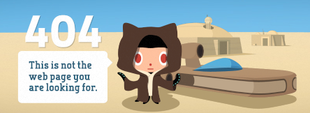
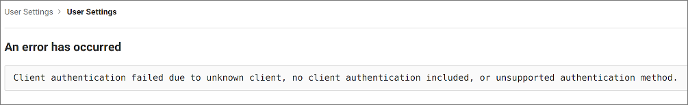
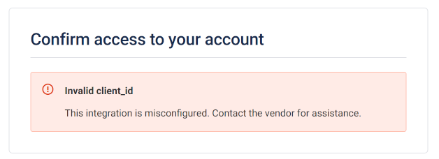

Troubleshooting¶
The sections below include information to help you troubleshoot issues that you may come across while configuring the integration of Codacy with your Git provider.
If the information provided on this page is not enough to solve your issue, contact support@codacy.com providing all the information that you were able to collect while following the troubleshooting instructions.
GitHub Cloud and GitHub Enterprise authentication¶
404 error¶
While trying to authenticate on GitHub you get the following error message:

This might mean that there is a mismatch in the Client ID that Codacy is using to authenticate on GitHub.
To solve this issue:
- Make sure that the value of
clientIdin yourvalues-production.yamlfile is the same as the Client ID of the GitHub App that you created - If the values were different, update your configuration and re-execute the
helm upgradecommand as described for GitHub Cloud or GitHub Enterprise
If the error persists:
- Take note of the parameter
client_idin the URL of the GitHub error page (for example,Iv1.0000000000000000) - Check if the value of the parameter matches the value of the Client ID of your GitHub App
GitLab Cloud and GitLab Enterprise authentication¶
Invalid redirect URI¶
While trying to authenticate on GitLab you get the following error message:

This might mean that the redirect URIs are not correct in the GitLab application that Codacy is using to authenticate on GitLab.
To solve this issue:
- Open the GitLab application that you created on GitLab Cloud or GitLab Enterprise
- Make sure that all the redirect URIs have the correct protocol for the Codacy instance endpoints, either
http://orhttps:// - Make sure that all the redirect URIs have the full path with the correct case, since the field is case-sensitive
If the error persists:
- Take note of the parameter
redirect_uriin the URL of the GitLab error page (for example,https%3A%2F%2Fcodacy.example.com%2Flogin%2FGitLaborhttps%3A%2F%2Fcodacy.example.com%2Flogin%2FGitLabEnterprise) - Decode the value of the parameter using a tool such as urldecoder.com (for example,
https://codacy.example.com/login/GitLaborhttps://codacy.example.com/login/GitLabEnterprise) - Check if the decoded value matches one of the redirect URIs of your GitLab application
Unknown client¶
While trying to authenticate on GitLab you get the following error message:

This might mean that there is a mismatch in the Application ID that Codacy is using to authenticate on GitLab.
To solve this issue:
- Make sure that the value of
clientIdin yourvalues-production.yamlfile is the same as the Application ID of the GitLab Cloud or GitLab Enterprise application that you created - If the values were different, update your configuration and re-execute the
helm upgradecommand as described for GitLab Cloud or GitLab Enterprise
If the error persists:
- Take note of the parameter
client_idin the URL of the GitLab error page (for example,cca35a2a1f9b9b516ac927d82947bd5149b0e57e922c9e5564ac092ea16a3ccd) - Check if the value of the parameter matches the value of the Application ID of your GitLab application
Bitbucket Cloud authentication¶
Invalid client_id¶
While trying to authenticate on Bitbucket Cloud you get the following error message:

This might mean that there is a mismatch in the OAuth consumer Client ID that Codacy is using to authenticate on Bitbucket Cloud.
To solve this issue:
- Make sure that the value of
keyin yourvalues-production.yamlfile is the same as the Key of the Bitbucket OAuth consumer that you created - If the values were different, update your configuration and re-execute the
helm upgradecommand as described for Bitbucket Cloud
If the error persists:
- Take note of the parameter
client_idin the URL of the Bitbucket Cloud error page (for example,r8QJDkkxj8unYfg4Bd) - Check if the value of the parameter matches the value of the Client ID of your Bitbucket OAuth consumer